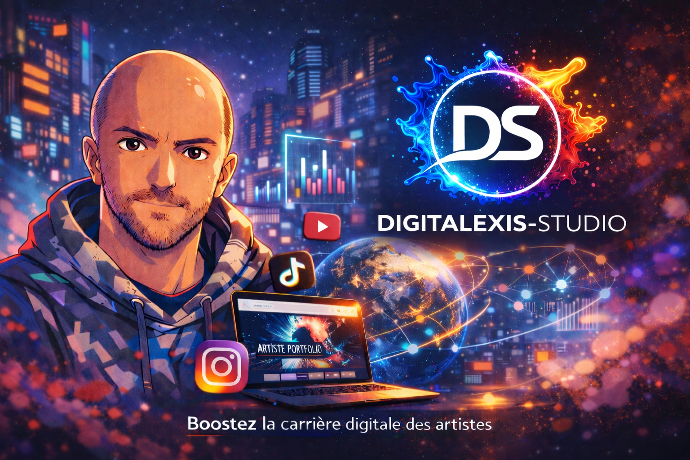

Un site qui explique mieux l'offre, rassure plus vite et simplifie la prise de contact.
Studio digital & freelance web
Digitalexis-Studio, creation de site web pour entreprise, site vitrine premium et presence en ligne professionnelle.
Avec Digitalexis-Studio, j'aide les independants, TPE, artistes et petites entreprises a clarifier leur offre, lancer un site vitrine haut de gamme, renforcer leur presence en ligne et poser des bases SEO propres pour etre plus credibles, plus visibles et plus simples a contacter.
Site vitrine premium
SEO petite entreprise
Accompagnement numerique


Vision
Atelier

Approche
Un studio digital freelance qui aligne image, site vitrine et conversion.
Je ne livre pas juste une page. Je travaille le positionnement, la structure, les textes et la clarte du parcours pour qu'une entreprise puisse presenter son activite avec une presence en ligne plus serieuse, plus lisible et plus convaincante.
Un bon site vitrine ne sert pas seulement a "etre present". Il doit faire comprendre l'offre, soutenir la credibilite de la marque et preparer la prise de contact sans friction.
- Positionnement net, angle juste et promesse lisible des les premiers ecrans.
- Arborescence, textes et design penses pour un site web d'entreprise clair et rassurant.
- CTA, structure SEO et outils utiles pour transformer la visite en vrai contact.
Services
Creation de site vitrine, SEO et accompagnement numerique pour une presence en ligne solide.
Chaque service renforce la meme ambition : aider une entreprise a mieux se presenter, mieux se positionner sur Google et mieux convertir avec une image premium.
Creation de site vitrine
Une vitrine claire et haut de gamme pour presenter ton activite, tes services et tes points de contact sans disperser le visiteur.
Creation ou refonte de site web pour entreprise
Structure, contenu, ergonomie et rendu premium pour construire une presence en ligne professionnelle qui inspire confiance.
SEO pour petite entreprise
Balises, titres, structure Hn, textes, maillage et pages bien pensees pour gagner en pertinence sur Google de facon naturelle.
Accompagnement numerique
Cadrage du projet, priorites, outils, mise en ligne et accompagnement pour avancer avec une direction claire plutot qu'une to-do list floue.
Copywriting & identite digitale
Promesse, tonalite, visuels et messages pour que le site vende mieux sans donner l'impression d'un modele impersonnel.
Suivi, optimisation & evolution
Corrections, nouvelles sections, optimisations SEO et ajustements continus pour faire vivre le site apres la mise en ligne.


Aides & financement
Un accompagnement numerique peut aussi inclure le cadrage du dossier et des financements.
Au-dela de la creation du site vitrine, de la refonte web ou du CRM, je peux aussi t'aider a preparer un dossier plus clair pour certaines demandes d'aide ou de financement selon le contexte.
L'objectif n'est pas seulement de remplir un dossier. Il faut donner au projet une forme claire, credible et professionnelle pour qu'il soit compris rapidement.
- Analyse du besoin. On clarifie le projet, la prestation et le cadre de financement le plus pertinent.
- Montage du dossier. Je t'aide a structurer les pieces, les justificatifs et la presentation du projet.
- Presentation propre. Le dossier, le devis et les documents sont prepares de facon claire et professionnelle.
Point important. L'obtention d'une aide depend toujours de ton eligibilite, du dispositif vise et de la validation finale par l'organisme financeur.
Espace prive
Le site attire. L'espace client et le suivi commercial prennent le relais.
Une presence en ligne professionnelle ne s'arrete pas a la vitrine. Quand le besoin existe, j'integre aussi un back-office propre pour gerer les clients, les devis, les factures et le suivi.
- Creation client rapide et recherche instantanee
- Devis transformables en facture sans ressaisie
- PDF premium, archives et statuts de paiement
- Tableau de bord pour piloter l'activite au mois
Coordonnees, notes et historique centralises.
Chaque fiche reste exploitable pour relancer, facturer et contextualiser les projets.
Numerotation auto, calculs fiables et PDF propres.
Moins d'erreurs manuelles, plus de temps pour la vente et la production.

Reste a payer, statuts et statistiques mensuelles.
Le pilotage commercial devient lisible, meme quand les projets s'enchainent vite.
Vision
Une presence en ligne professionnelle se construit dans le fond, la forme et la structure.
Quand le message, le design, le SEO et le parcours sont alignes, l'entreprise gagne en lisibilite. La marque devient plus credible, la prise de contact plus naturelle et l'ensemble plus memorable.
- Une identite immediate et plus serieuse
- Un site vitrine qui tient la route sur mobile comme sur desktop
- Des contenus plus clairs pour Google et pour les vrais clients



CV
Alexis Guillotin, freelance web derriere Digitalexis-Studio.
Je developpe des experiences digitales coherentes pour les independants, artistes, petites entreprises et projets creatifs : site vitrine, copywriting, identite visuelle, contenus, accompagnement numerique et optimisation de la presence en ligne.
- HTML, CSS, JavaScript, Netlify et Supabase
- Direction artistique, compositions et visuels premium
- Approche globale : image, web, contenu et accompagnement
Reconversion numerique
Portfolio
Community management
FAQ
Questions frequentes avant de lancer un site vitrine ou un accompagnement numerique.
Voici les points qui reviennent le plus souvent quand une entreprise veut creer un site web, clarifier son image ou mieux se positionner sur Google.
Combien coute la creation d'un site vitrine ?
Le budget depend surtout du niveau d'ambition, du nombre de pages, du travail sur les textes, du design, des besoins SEO et des outils a connecter. L'objectif est de proposer un cadre clair plutot qu'un tarif flou.
Peux-tu gerer aussi le SEO pour petite entreprise ?
Oui. Je travaille la structure des pages, les H1/H2, les meta donnees, les textes, les intentions de recherche et la clarte des offres pour poser des bases SEO propres des la mise en ligne.
Landing page ou site web pour entreprise : que choisir ?
Une landing page concentre l'attention sur une offre ou une conversion. Un site vitrine presente plus largement l'entreprise, les services, les preuves de confiance et la prise de contact.
Peux-tu refondre un site existant au lieu de repartir de zero ?
Oui. Une refonte peut concerner le design, la structure, les contenus, l'experience mobile, les appels a l'action et la lisibilite SEO sans jeter tout ce qui existe deja.
Contact
Parlons de ton site vitrine, de ta refonte web ou de ton accompagnement numerique.
Que tu partes de zero ou d'un site deja en ligne, je peux t'aider a clarifier l'offre, structurer la page, soigner le rendu premium et poser des bases SEO propres pour ton activite.
Email
alexguil94@hotmail.fr
Types de missions
Creation de site vitrine, refonte web, SEO on-page, copywriting, accompagnement numerique et CRM.
Suite possible
Diagnostic, devis, appel de cadrage, mise en ligne ou evolution du site selon ton besoin.
Cadre juridique
Politique de confidentialite et conditions d'utilisation accessibles depuis la page d'accueil.
Pour consulter les regles applicables a l'utilisation du site et au traitement des donnees, tu peux ouvrir directement la politique de confidentialite, les conditions d'utilisation et les mentions legales depuis cette page.